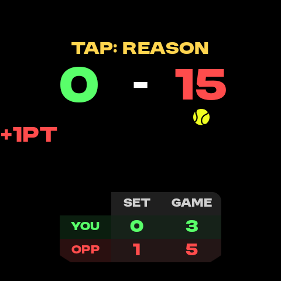
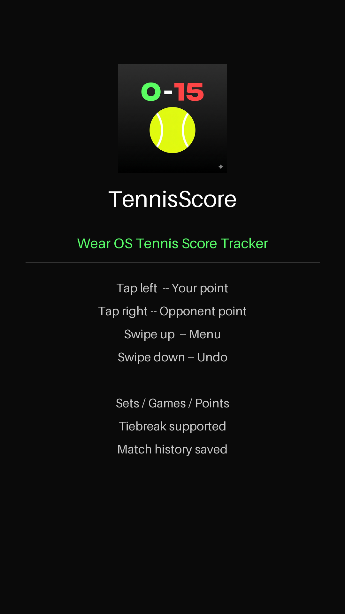
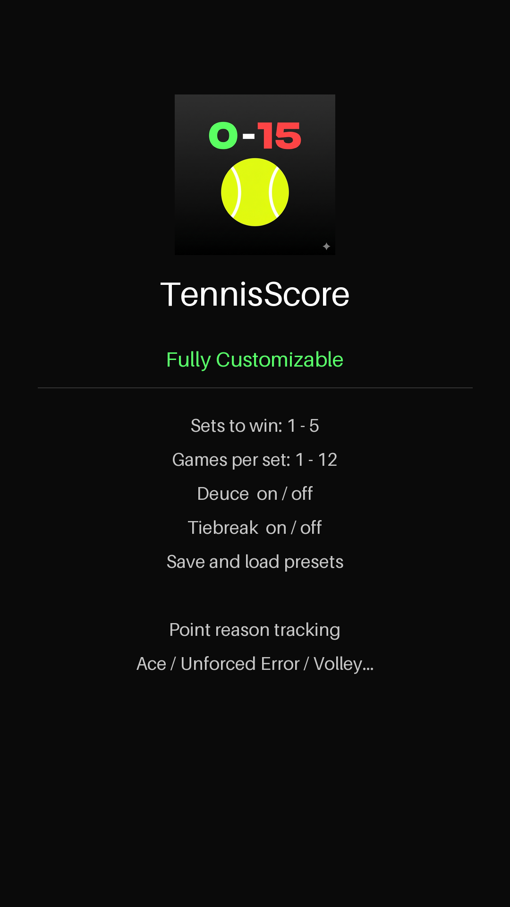
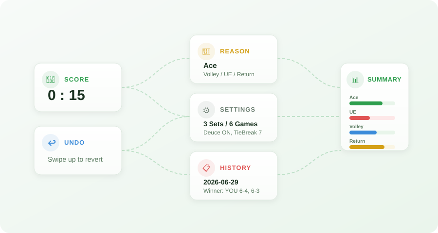
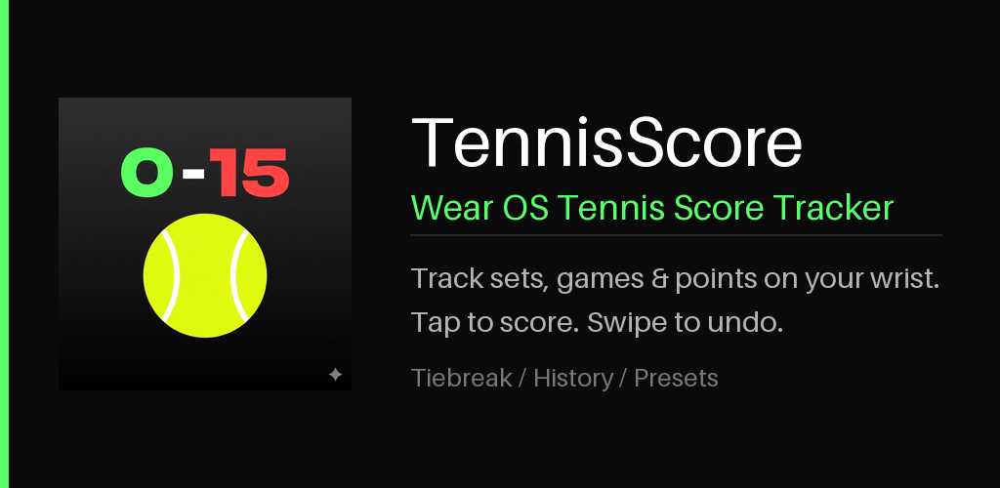
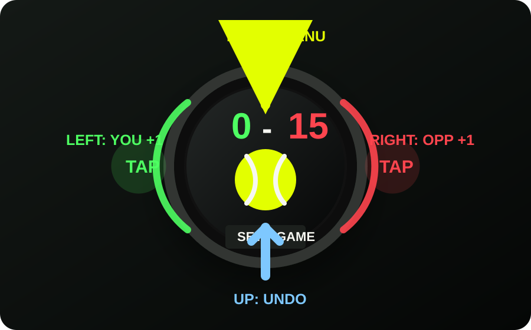

TennisScoreでできること
タップで簡単スコア記録。プレー内容の記録・分析まで、テニスの試合をもっと楽しくする5つの機能。
タップで簡単カウントアップ
画面の左側をタップすれば自分に加点、右側をタップすれば相手に加点。ポイントは0、15、30、40、Adとテニスのルール通りに自動で進みます。試合中に考える必要はありません。

下からスワイプで1個戻す
間違えてタップしても大丈夫。画面を下から上にスワイプするだけで、直前のポイントを取り消せます。テニスのプレー中でも、片手でサッと修正できます。

ゲームの詳細設定が可能
セット数、ゲーム数、デュースの有無、タイブレークのルールなど、試合のルールを自由にカスタマイズ。練習用の短いゲームから本格的な試合まで、さまざまなシーンに対応できます。

プレー内容を記録
ポイントが入ったとき、Ace、Unforced Error、Volley、Returnなど、どんなプレーで得点したかを記録できます。試合後の振り返りやプレーの傾向分析に役立ちます。

記録をもとにサマリー表示
記録したプレー内容をもとに、ポイント理由ごとのカウントや割合をサマリーとして表示。自分の強みや改善点が一目でわかります。過去の試合履歴も保存できるので、成長の記録にもなります。

タップとスワイプだけの簡単操作
Wear OSの操作と干渉しない設計。4つのジェスチャーですべてをコントロールできます。

画面の左側をタップして、自分のポイントを追加します。
画面の右側をタップして、相手のポイントを追加します。
上から下へスワイプして、設定、履歴、サマリーなどを開きます。
下から上へスワイプして、直前の操作を取り消します。
試合ルールを柔軟に設定
練習、短いゲーム、正式ルール寄りの試合など、場面に合わせて設定できます。
腕元で、試合の流れを逃さない。
TennisScoreは、試合中の操作をできるだけ少なくしながら、あとで振り返れる情報を残すWear OS向けスコアトラッカーです。